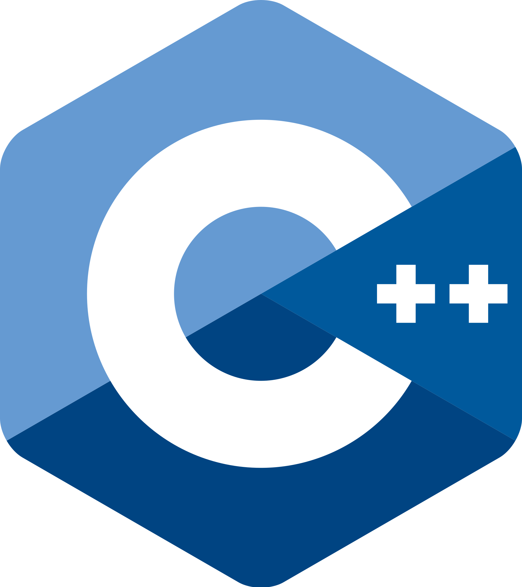

| C# (си шарп) — объектно-ориентированный язык программирования, который я использую для реализации программ на протяжении последнего года.C# относится к семье языков с C-подобным синтаксисом, из них его синтаксис наиболее близок к C++ и Java. Язык имеет статическую типизацию, поддерживает полиморфизм, перегрузку операторов (в том числе операторов явного и неявного приведения типа), делегаты, атрибуты, события, переменные, свойства, обобщённые типы и методы, итераторы, анонимные функции с поддержкой замыканий, LINQ, исключения, комментарии в формате XML. |
|  |
C++ (си-плюс-плюc) — компилируемый, статически типизированный язык программирования общего назначения используемый мной в начале моего птуи. C++ широко используется для разработки программного обеспечения, являясь одним из самых популярных языков программирования[мнения 1][мнения 2]. Область его применения включает создание операционных систем, разнообразных прикладных программ, драйверов устройств, приложений для встраиваемых систем, высокопроизводительных серверов, а также игр. |

|
SQL (Structured Query Language — «язык структурированных запросов») — декларативный язык программирования, применяемый для создания, модификации и управления данными в реляционной базе данных, управляемой соответствующей системой управления базами данных. В сових проектах данный язык был использован для создания запросов обращений к БД которые необхимо было изменять. |

|
Python — высокоуровневый язык программирования общего назначения с динамической строгой типизацией и автоматическим управлением памятью, ориентированный на повышение производительности разработчика, читаемости кода и его качества, а также на обеспечение переносимости написанных на нём программ[27]. Язык является полностью объектно-ориентированным в том плане, что всё является объектами. Данный язык я использовал исключительно для создания телеграмм ботов. |

|
HTML (HyperText Markup Language — «язык гипертекстовой разметки») — стандартизированный язык гипертекстовой разметки документов для просмотра веб-страниц в браузере. Веб-браузеры получают HTML документ от сервера по протоколам HTTP/HTTPS или открывают с локального диска, далее интерпретируют код в интерфейс, который будет отображаться на экране монитора. |

|
JavaScript — мультипарадигменный язык программирования. Поддерживает объектно-ориентированный, императивный и функциональный стили. Является реализацией спецификации ECMAScript (стандарт ECMA-262). JavaScript обычно используется как встраиваемый язык для программного доступа к объектам приложений. Наиболее широкое применение находит в браузерах как язык сценариев для придания интерактивности веб-страницам. |